EXERCÍCIOS
A seguir, a descrição, as criações e avaliações que foram realizadas pela e para a terceira turma (2017) a partir do “Primeiro Exercício – Busílis”:
No início de maio, começam a acontecer os encontros individuais entre cada autor da turma com o coordenador Diogo Liberano. Para este primeiro encontro, cada autor teve que enviar previamente ao coordenador algumas páginas nas quais constasse um busílis (o cerne de alguma questão). Nestas páginas, poderia já haver especulações de como cada autor mexeria com essa questão ou apenas intuições disformes sobre um interesse de composição dramatúrgica.
Nesses encontros individuais, a leitura dessas páginas foi feita e, a partir de uma conversa, cada autor recebeu um prazo (cinco/seis semanas após o dia da reunião) e alguns limites-ingredientes (definidos pelo coordenador) que deveriam estimular-integrar a composição de sua nova criação:
- 01 imagem poética (mímema) evidente-estruturante;
- entre 12 e 15 páginas;
- uso criterioso de rubricas (quando houver);
- diálogo (como atravessamento de uma questão);
- atenção à diagramação do texto no papel;
- escrita dramatúrgica como guia da atenção (Eugenio Barba).
Após os textos escritos serem entregues, cada autor recebeu comentários do coordenador para que, a partir deles, fizesse uma versão final do exercício. Em seguida, foram feitos convites a diversos artistas da cena (em sua maior parte, diretoras e diretores de teatro). A eles, nas palavras do coordenador, foi solicitado o seguinte:
“...Como uma dentre inúmeras atividades que estamos fazendo, cada autor escreveu um primeiro exercício de escrita dramática em resposta a uma provocação que fiz a eles a partir da palavra ‘busílis’. Busílis é o cerne da questão, a dificuldade, o problema. Cada autor, assim, teve um encontro individual comigo, apresentou seu busílis e, a partir dele, discorremos sobre intuições e referências que pudessem transformar aquele busílis numa pequena dramaturgia de no máximo 15 páginas.
Agora, com 15 dramaturgias escritas (elas foram comentadas por mim e finalizadas pelos autores), convido artistas que admiro para que possam ler um desses escritos e escrever, em troca, uma carta destinada ao dramaturgo ou à dramaturga que o escreveu. Interessa que, através dessa carta, você discorra sobre como foi a sua recepção do texto lido, bem como destinar a quem o escreveu algumas palavras que possam contribuir para o aprofundamento no trabalho com dramaturgia...”
A seguir, disponibilizamos o “Primeiro Exercício – Busílis” de cada autor da terceira turma, bem como a carta enviada aos autores da turma por cada um dos “avaliadores” convidados:
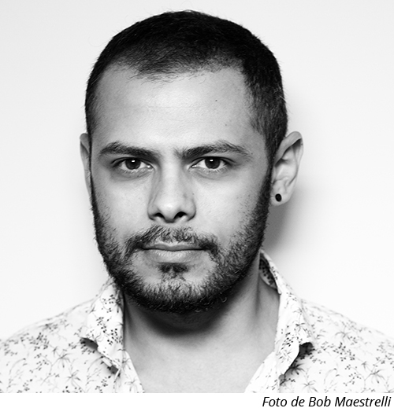 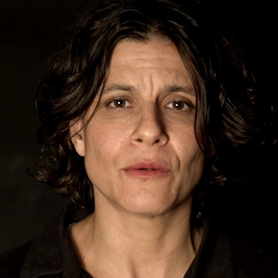
Antonio de Medeiros escreve “O canto do bem-te-vi” e recebe uma carta de atriz e diretora Georgette Fadel
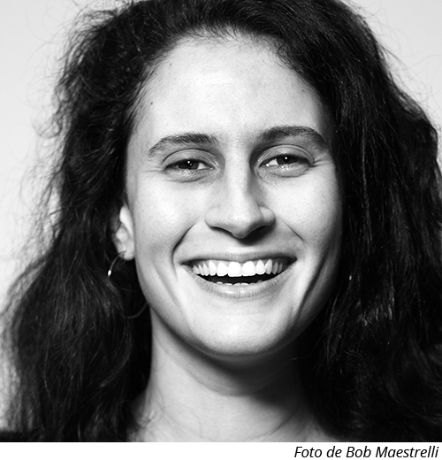 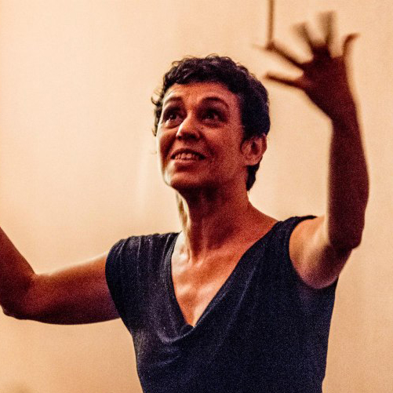
Cecilia Ripoll escreve “CUIDADO ESPELHO FRÁGIL” e recebe uma carta da bailarina e coreógrafa Denise Stutz
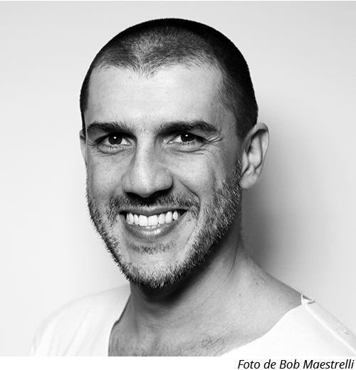
Daniel Chagas escreve “Eu sou Brasília” e recebe uma carta da atriz, diretora teatral e pesquisadora Ana Kfouri

Francisco Marden escreve “Terra” e recebe uma carta do dramaturgo, diretor e ator Marcio Abreu
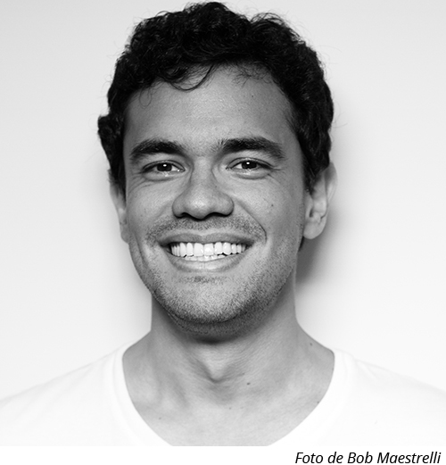
Francisco Ohana escreve “14 instruções para sobreviver” e recebe uma carta do artista da imagem Felipe Ribeiro
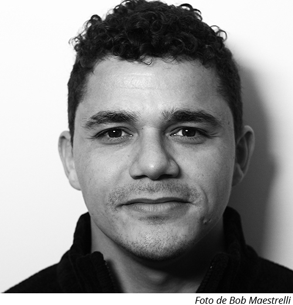 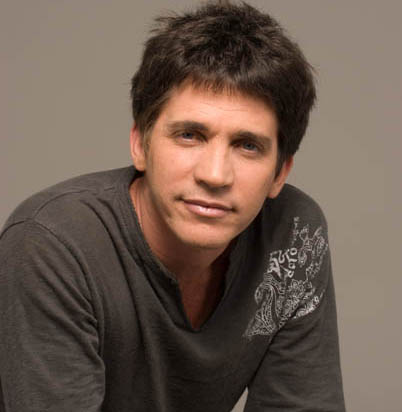
Jean Pessoa escreve “PURGAÇÃO” e recebe uma carta do diretor, professor, ator e autor Daniel Herz
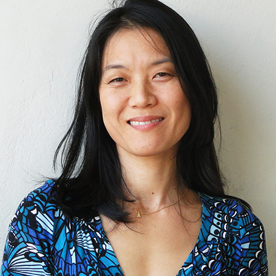
Livs Ataíde escreve “subjuntivo” e recebe uma carta da atriz e diretora Miwa Yanagizawa
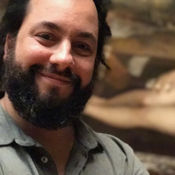
Luiza Goulart escreve “Órbita” e recebe uma carta do diretor teatral Luiz Fernando Marques
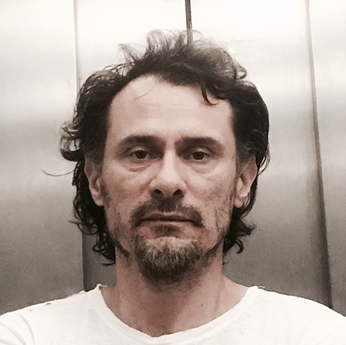
Marcela Andrade escreve “Algo antes de se deixar partir” e recebe uma carta do ator e diretor Enrique Diaz
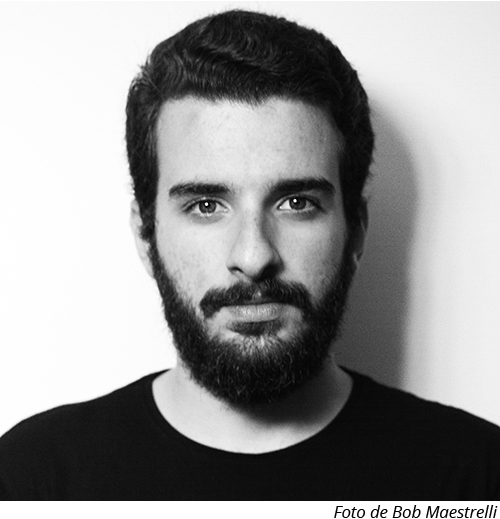 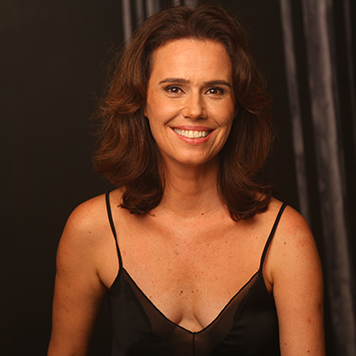
Matheus de Cerqueira escreve “Corpo texto, poesia” e recebe uma carta da atriz e diretora Susana Ribeiro
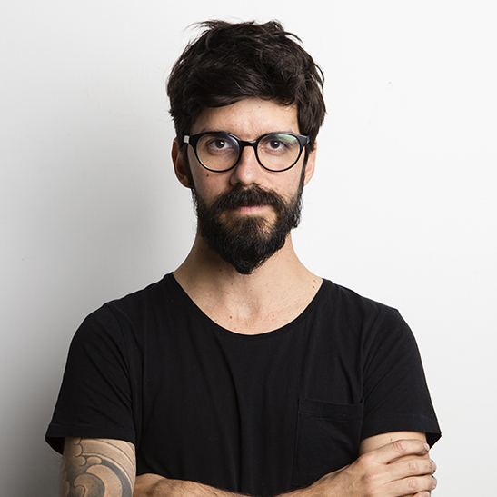
Olga Almeida escreve “Passei na sua casa pra ver suas pinturas” e recebe uma carta do ator e diretor Marcelo Castro
Rosane Bardanachvili escreve “Comida” e recebe uma carta da diretora de teatro e preparadora de elenco Joana Lebreiro
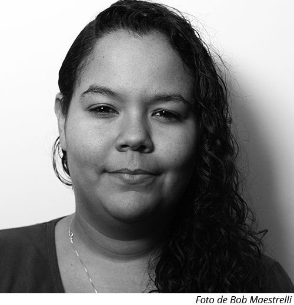 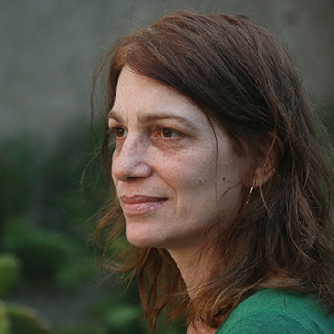
Suellen Casticini escreve “TRILHOS” e recebe uma carta da atriz, diretora e pesquisadora Marina Vianna
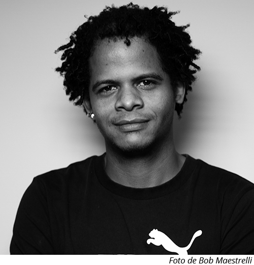 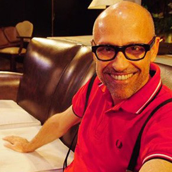
Diego Dias escreve “AV. JERÔNIMO AFONSO” e recebe uma carta do ator e diretor Gilberto Gawronski. Unicamente neste caso, o avaliador solicitou que a carta fosse entregue em mãos para o autor e que não fosse divulgada na internet.